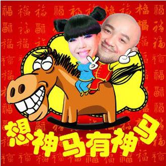

音乐播放器
-
遗憾 (Live)
-
如果没有你
-
我是不是你最疼爱的人 (Live)
-
人質
-
残酷月光 (Live)
-
爱情没有刚刚好
-
想神马有神马
-
想自由 (Live)
-
会痛的石头 (Live)
-
末日不孤单 (Live)
-
新不了情 (Live)
-
我是不是你最疼爱的人 (Live)
-
遗憾 (Live)
-
傻瓜 (Live)
-
简单的事 (Live)
-
到不了 (Live)
-
取名回忆的时光
-
不懂+你怎么舍得我难过+洋葱+爱我别走+我的未来不是梦
-
在我想起来 (Live)
-
爱与愁+过火
-
月亮代表我的心 (Live)
-
簡單的事
-
伤心童话
-
我是不是你最疼爱的人 (Live)
-
阳光传奇
-
简单的事(现场版)
-
希望爱
-
善男信女 (Live)
-
取名回憶的時光
-
我是不是你最疼爱的人 (Live)



热门留言
 玄夜图腾 有多少人和我一样是看了苏宁的广告知道的这首歌？
玄夜图腾 有多少人和我一样是看了苏宁的广告知道的这首歌？- Dear1107671013 非常喜欢李代沫和吴莫愁一起合唱。可惜可惜呀，李代沫，真是可惜了。
- 魔法少女马建国 拜年音乐里少有能听的正经货
- mocoma 这才是华语应该有的样子嘛 ！[大笑]
- 为什么我不能叫大脸兔 有种想回家过年的冲动...
- 沒力超人 打麻将的时候心里默唱这首再适合不过。😎
- carnival7 出国在外，回家后对于2014年初印象就是这首歌，一眨眼好快又一年。
- 追风筝的安宁 这首歌是我华语里面最心水的！！！！！
- 网瘾少年赵潮潮 时间过的好快，上一次单曲循环这歌还是在马年，今年都鸡年了[流泪]
- 啊啊啊丶梁 三年了，还没上999
- 鲁上黄 2018，还有谁在听的啊
- 普通新鲜popo菌 广告歌的教科书 [强]
- 香芋KOI 希望吴莫愁再次火起来 她的这首 和那首百事可乐的那首我都非常喜欢 六年前的回忆啊
- 磊磊Only_Me 今天突然想起这首歌，于是搜了出来，发现……时间真的真的太快，马上快2019了，五年前的大家，都是什么样子啊😊，我们肯定都比五年前变得更好了哈哈哈，再次来听2014这首歌的，一定是个有心人❤
- 御崎甘草 又找到了这首我遗忘了好久的歌，最喜欢的时候我还在上初中，现在我已经大学了，听起来依然还是好喜欢，回忆起的都是放学后我在我妈的小电驴后一边哼这首歌一边在路灯下寻找我喜欢的那个男孩
- OKCgeorge 当然，下一轮马年再听
- 溪见tan 6年前，属马的我那年刚满12岁，感觉现在的自己好怀旧啊哈哈....
- Richard-Leon 坐等2026年，再回马年，重温此曲，慕然回首，不知心里是何感受...
- 凹凸曼和阿童木 我有预感 在这个艺人嘈杂的环境下 吴莫愁这样的实力派被大家想起来 希望我能等到这天
- 群青Akatsuki 当年刚听这首歌的时候我还是本科，正是最近这些年最低落的时候。
后来第二次听到的时候，我在等待硕士入学。那个时候我充满了期待，可是三年下来有些事情还是没做好。
现在我又听到了这首歌，还有四天就要申请博士了，我希望我能成功。我希望能做到更好。